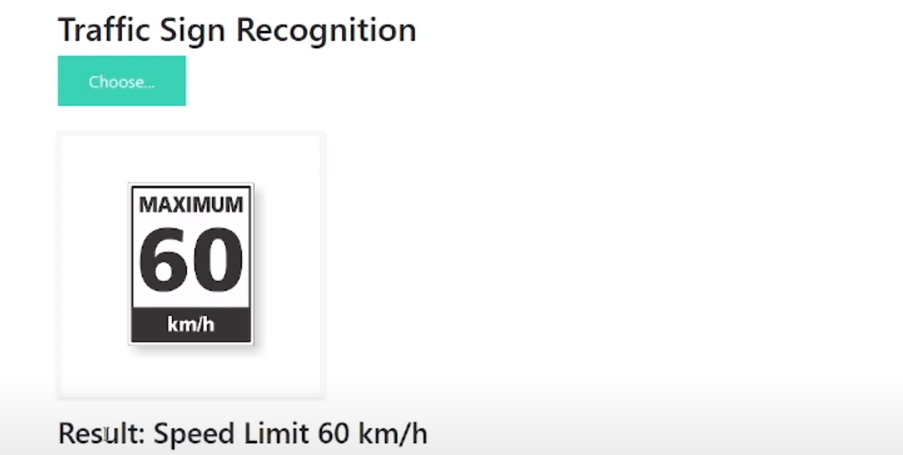
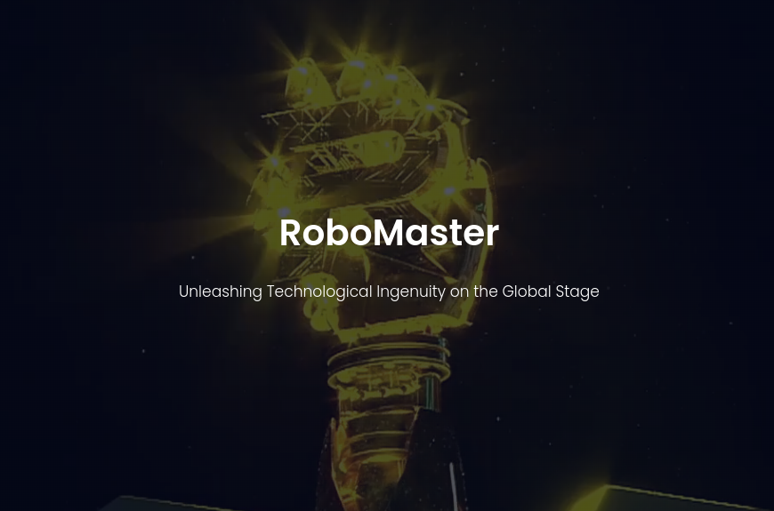
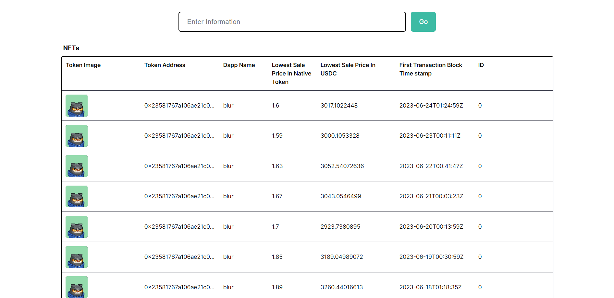
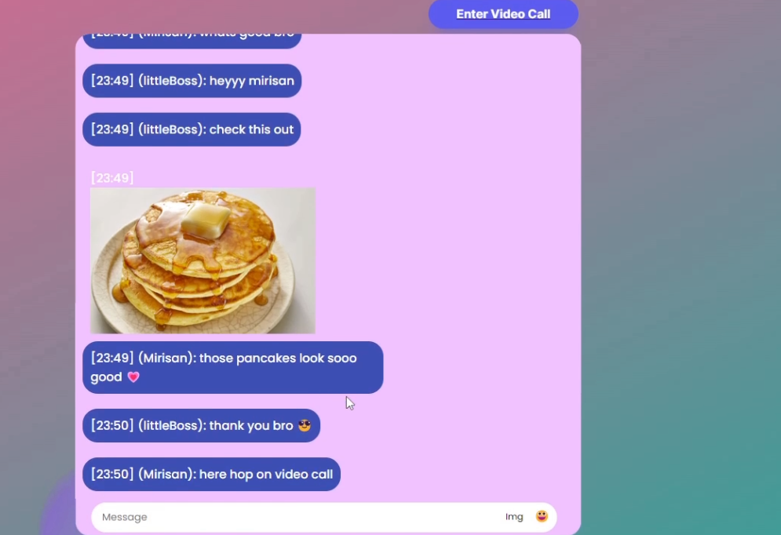
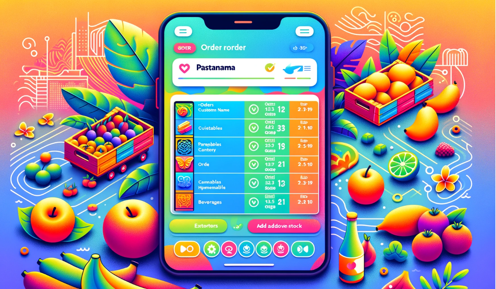
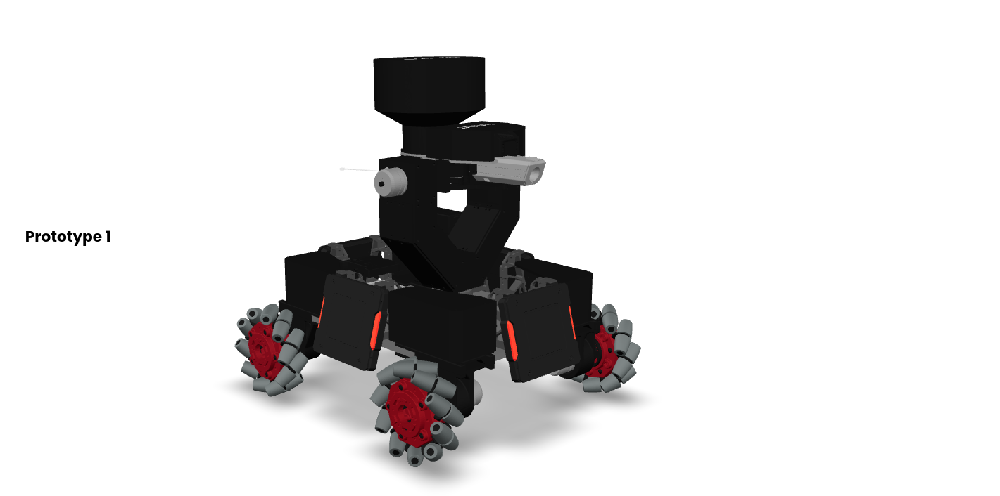

About
👋 I'm a 3rd year
Previously, I provided tech support as a March Break Camp Counsellor at
Outside of work, I enjoy exploring AI and robotics, continuously learning new technologies, and contributing to team efforts in robot development.
✨ Seeking
Quick Summary 📋
Hackathons
I have attended over
Leadership
I have demonstrated leadership through my role as a Programming/Computer Vision
Personal Projects
Beyond professional and academic work, I actively engage in personal projects to explore new technologies and methodologies. These projects include developing an AI-based garbage classification system using
My Works-in-Progress
Skills
Software Development
With extensive experience in software development, I have built robust applications using modern frameworks and languages. My work includes developing and maintaining software for robotics, AI, and machine learning projects, as well as creating web and mobile applications.
Artificial Intelligence & Machine Learning
I have a strong foundation in AI and machine learning, with practical experience in developing intelligent systems for robotics and computer vision applications. My projects include implementing deep learning models for real-time object detection and classification.
Robotics Engineering
My robotics engineering skills include developing control systems for autonomous robots, integrating various sensors and actuators, and implementing algorithms for navigation and obstacle avoidance. I have led teams in designing and building robots for competitions and real-world applications.
Data Analysis
Proficient in data analysis and visualization, I have worked on projects involving large datasets to derive actionable insights. My experience includes using tools such as Python, R, and SQL to analyze data and create visualizations that support decision-making processes.
Problem Solving
With a strong analytical mindset, I excel in solving complex problems through logical reasoning and innovative thinking. I have successfully tackled various challenges in software development, AI, and robotics, delivering effective and efficient solutions.
Project Management
Experienced in managing projects from conception to completion, ensuring timely delivery and maintaining quality standards. I have led teams in developing innovative solutions, coordinating tasks, and overseeing all aspects of project execution.
My Projects
Hover over the images to explore the details of the projects I've been passionately working on.

Computational Photography
Web service for image editing and machine learning components for traffic sign recognition and vehicle type classification.
Technologies:
Implemented various computational photography techniques, including cropping, applying filters, and grayscale conversion. Developed machine learning models for traffic sign recognition and vehicle type classification, achieving high accuracy in both tasks.

OTU Robotics Website
Website for the OTU Robotics team to showcase projects, achievements, and events.
Technologies:
Developed the official website for the OTU Robotics team, featuring sections for team information, project descriptions, news updates, and contact information. Enhanced the website's interactivity and user experience using JavaScript.

NFT Tracker
Web application for real-time insights and data about NFT collections.
Technologies:
Developed a web application to track and display detailed information about NFT collections. Integrated with the AirStack API to provide comprehensive data and visualizations, enhancing user engagement and understanding of NFT metrics.
Hotel-management
Comprehensive web application for hotel operations management.
Technologies:
Developed a web application for managing hotel operations, including room bookings, customer management, and service handling. Utilized Spring Boot and Thymeleaf for backend and frontend development, respectively, ensuring efficient and user-friendly operation.

BisRope WebApp
Advanced chat server application for organized communication within an organization.
Technologies:
Developed a chat server application supporting real-time messaging, image sharing, and video calling. Implemented a robust authentication system and used WebSockets for real-time communication. Ensured security and privacy through data encryption and server security measures.

Inventory Management App
A web application for restaurants in Panama to manage orders and inventory.
Technologies:
Developing a full-stack application to help restaurants manage their orders and inventory efficiently. The app automatically updates inventory levels based on placed orders and provides a user-friendly interface for restaurant staff to track and manage stock.

AI Garbage Classification Robot
Developing a robot that uses AI to classify and pick up garbage using NVIDIA Isaac simulation.
Technologies:
Creating a robot that utilizes AI for garbage classification and picking. Using NVIDIA Isaac simulation for development and testing, integrating TensorFlow models for classification and ROS for robot control and communication.

RoboMaster Embedded AI Programming
Working on embedded AI programming for the RoboMaster competition.
Technologies:
Developing and enhancing AI algorithms for the RoboMaster competition. Focused on improving object detection and tracking capabilities using embedded systems. Integrating advanced computer vision techniques to achieve high performance and reliability in competitive scenarios.